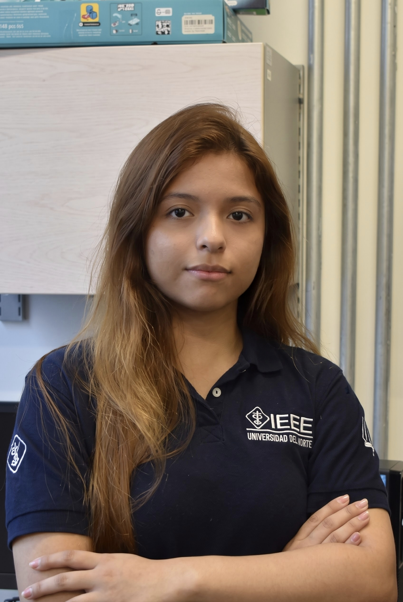
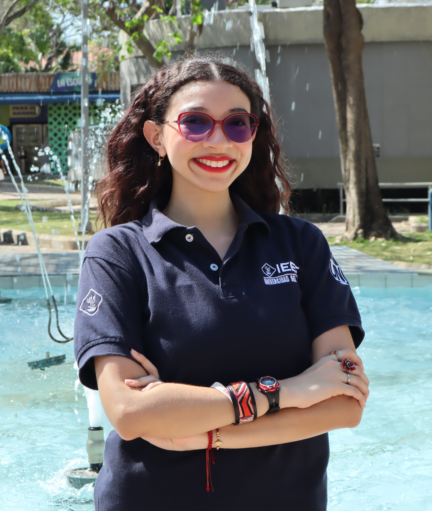
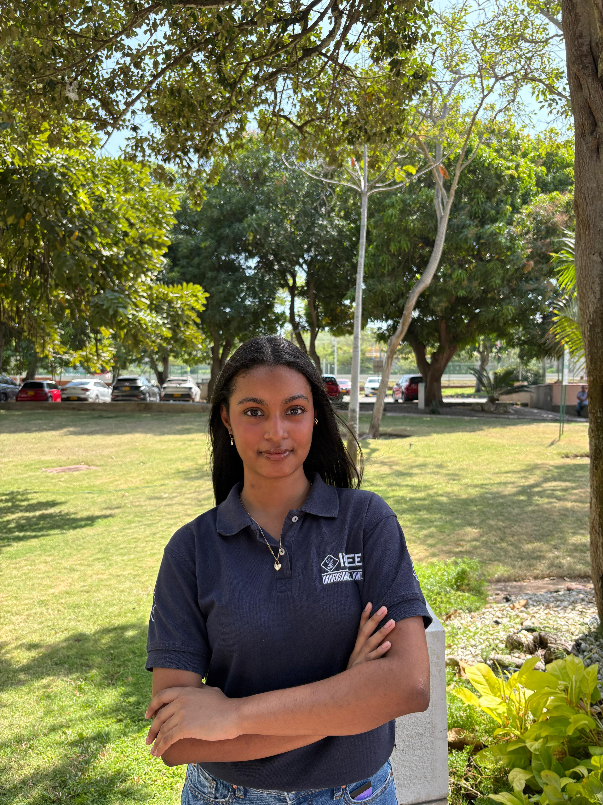

Angélica Baños Pallares
Backend · Base de datosResponsable del trabajo relacionado con la base de datos, su estructura y la organización de la información del sistema.
Ver perfil de LinkedIn ↗Detrás de la Biblioteca Universitaria hay un equipo de estudiantes que trabaja en conjunto para ofrecer una experiencia de consulta y gestión de recursos bibliográficos.

Responsable del trabajo relacionado con la base de datos, su estructura y la organización de la información del sistema.
Ver perfil de LinkedIn ↗Encargada de la interacción entre el backend, la base de datos y el frontend para permitir el intercambio de información. Además, desempeña el rol de DevOps, encargándose de la integración, el despliegue y la automatización de los procesos necesarios para mantener la aplicación en funcionamiento.
Ver perfil de LinkedIn ↗
Responsable del desarrollo de las interfaces orientadas a los usuarios, incluyendo el acceso y las funcionalidades de consulta.
Ver perfil de LinkedIn ↗
Encargada del desarrollo de las interfaces y funcionalidades destinadas a la administración del sistema de biblioteca.
Ver perfil de LinkedIn ↗Participante del equipo de frontend, colaborando en el desarrollo de las interfaces de la Biblioteca Universitaria.
Ver perfil de LinkedIn ↗Herramientas utilizadas para construir la aplicación web.
Biblioteca Universitaria
1.0.0
2026
© 2026 Equipo de Desarrollo de la Biblioteca Universitaria. Todos los derechos reservados.
Si deseas reportar un error o compartir una sugerencia, puedes ponerte en contacto con el equipo del proyecto.
Correo de soporte: sdariana@uninorte.edu.co.